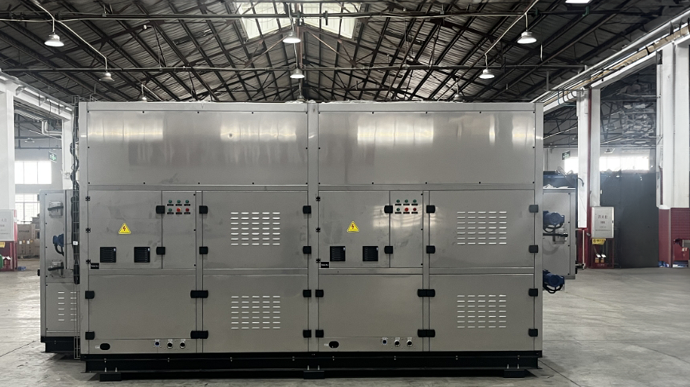

Secagem térmica de baixa temperatura para máxima redução de volume e massa do lodo desaguado — a série EAHD/EAWD utiliza ar quente de baixa temperatura (< 70 °C) para produzir um produto final granulado, estável, seguro e com alto potencial energético.

A secagem de lodo é a etapa final do tratamento que reduz o teor de umidade do lodo desaguado a valores muito baixos (< 15%), transformando-o em um produto granulado seco, estável e significativamente menor em volume e massa. Esse produto pode ser destinado à co-incineração, compostagem, uso agrícola ou valorização energética.
A tecnologia de baixa temperatura (EAHD/EAWD) utiliza ar quente a menos de 70 °C em circuito fechado, o que permite o uso de calor residual de outras fontes (co-geração, painéis solares, caldeiras) e garante a segurança operacional — sem risco de explosão associado a secadores de alta temperatura.
O lodo desaguado (15–25% MS) é distribuído uniformemente sobre a esteira perfurada do secador.
Ar quente (< 70 °C) circula em circuito fechado, atravessando o leito de lodo na esteira e evaporando a umidade.
O ar úmido é resfriado em um condensador interno; a água condensada é coletada e retorna ao processo de tratamento.
O lodo seco (> 85% MS) é descarregado como grânulos sólidos prontos para armazenamento, transporte ou valorização.
A linha de secadores de baixa temperatura oferece modelos para diferentes capacidades e fontes de energia, com total flexibilidade para integração com sistemas de co-geração e fontes renováveis.
Secador de esteira de baixa temperatura com circulação de ar quente gerado por resistência elétrica ou vapor. Modelo mais versátil da linha.
| Temperatura do ar | < 70 °C |
| MS de saída | 80 – 90% |
| Capacidade | até 20 m³/h |
| Fonte de energia | Elétrica / Vapor |
Versão otimizada para uso de calor residual de co-geração, digestão anaeróbia, energia solar ou outras fontes alternativas de baixo custo.
| Temperatura do ar | 40 – 70 °C |
| MS de saída | 75 – 90% |
| Fonte de energia | Calor residual |
| Eficiência energética | Muito alta |
A operação abaixo de 70 °C elimina o risco de ignição de poeiras — segurança máxima sem as exigências de sistemas de supressão de alta temperatura.
Integração com sistemas de co-geração ou energia solar permite operar com energia renovável — reduzindo drasticamente o custo operacional e a pegada de carbono.
A redução de 75–80% no volume e massa do lodo resulta em economia expressiva nos custos de transporte, aterro e destinação final.
O Sludge Dryer é a etapa final da cadeia de tratamento, maximizando o valor do lodo para valorização energética ou agrícola.
GBT / DAF
3 – 6% MS
BFP / Screw Press
15 – 28% MS
Sludge Dryer
85 – 92% MS
Fertilizante / Co-incineração / Biogás
Cimenteiras e usinas termelétricas
Aplicação agrícola regulamentada
Geração de composto orgânico
Grandes sistemas de tratamento
Siderurgia, papel e celulose
Aproveitamento energético do lodo
Nossa equipe analisa as características do seu lodo e dimensiona a solução mais adequada ao seu projeto.